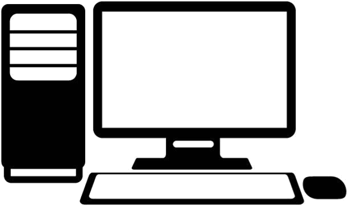

Reflection on task.
We we're presented with a series of coding tasks to help us find our feet with HTML and CSS. Firstly, learning how to place the text in the HTML file. Then, learning how to "jazz up" the site with fonts/ colours using CSS and finally, how to layout the content of the page in a tidy, ordered manner with flexbox. These tasks we're great for learning the different language needed to build a website and served as a brilliant guide to building our own websites. I have now gained confidence with website design and coding and this was all new to me so I am very happy.